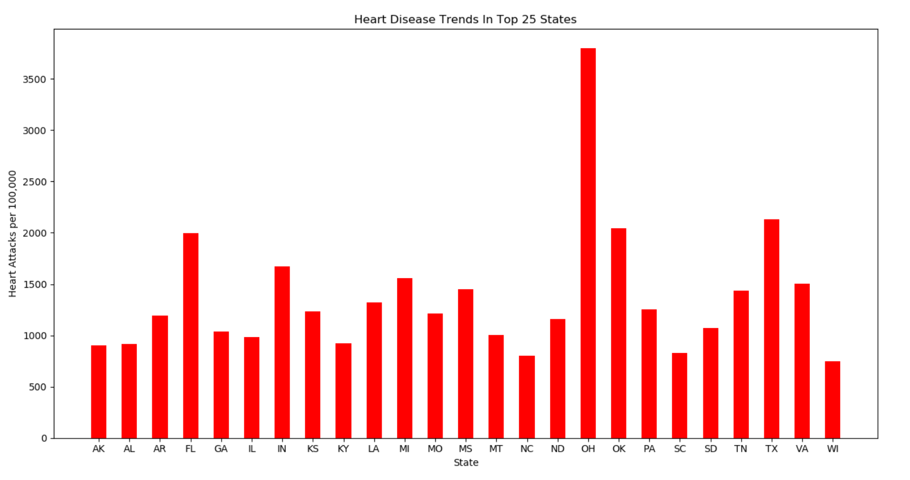

Heart disease tends to be extremely rare in the midwest, but appears mildly in heavily urbanized states like California and New York. On the contrary, heart disease appears very frequently in the South, with an especially large amount of cases in Texas.
When adjusting for population, heart attacks are still mainly in the southeast, with Texas coming in at second. However, Ohio's low population makes it the state with the most frequent heart attacks per 100,000 people. Highly urbanized areas with high population densities have disappeared entirely from the list.
